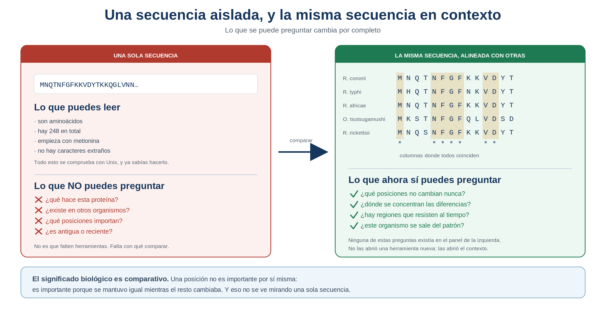
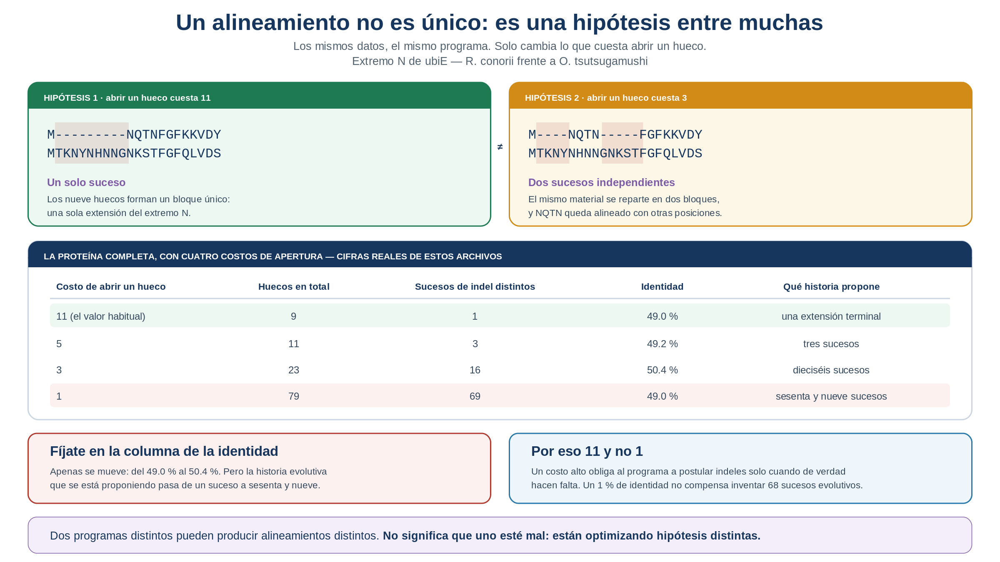
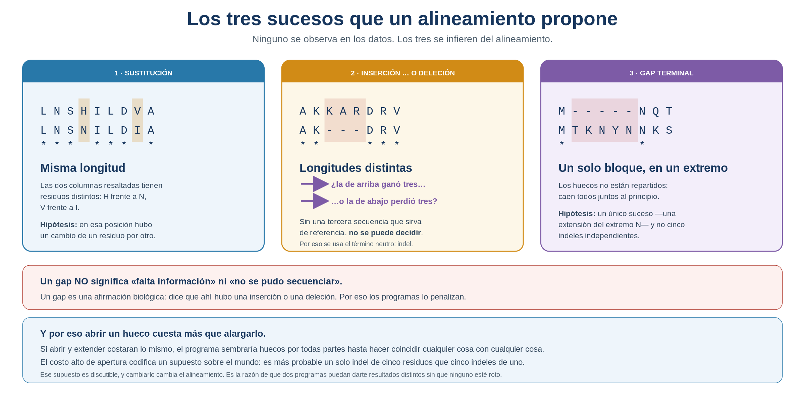
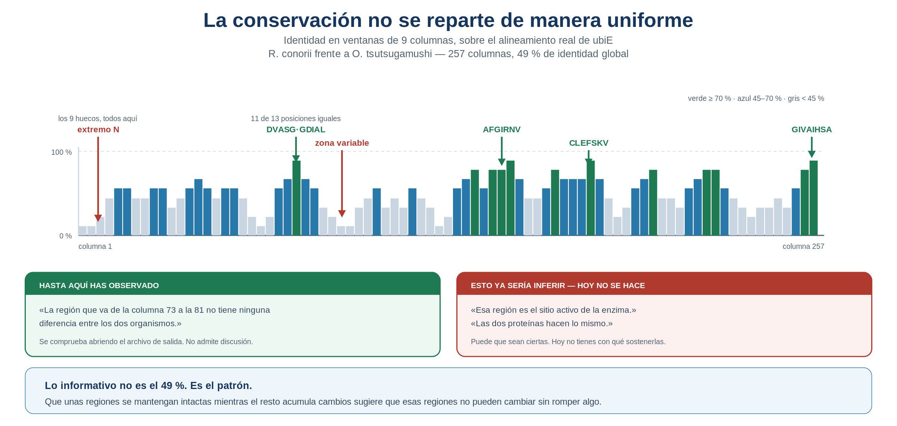
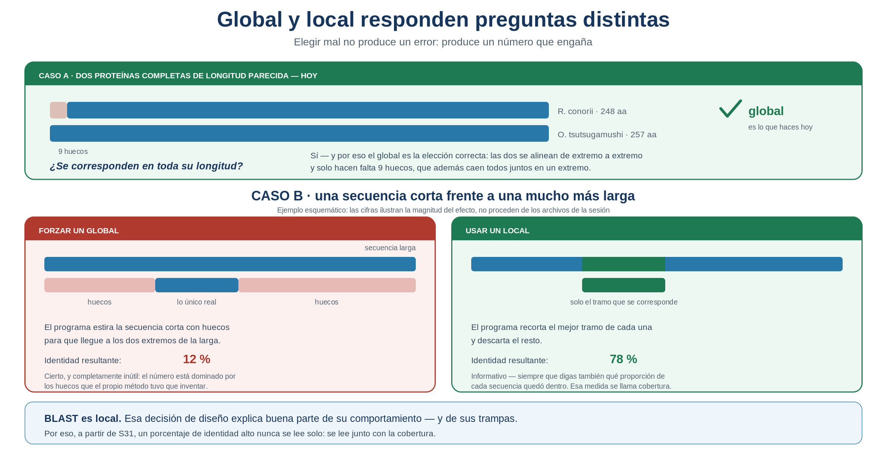
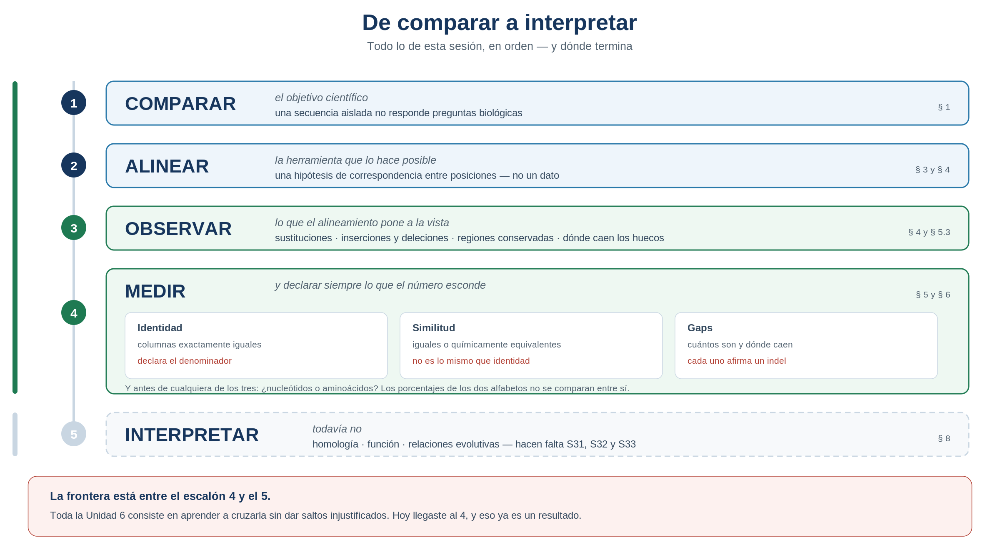

S30 — Comparar: una secuencia adquiere significado en contexto
Esta sesión tiene tres momentos. Antes de clase lees este módulo y haces un primer intento: comparar dos secuencias reales a ojo y describir lo que ves. Durante el taller construyes alineamientos de verdad y compruebas cuánto de tu descripción se sostenía. Después del taller entregas la versión corregida, con argumentos, más la sección correspondiente del protocolo. El primer intento es formativo: se califica por haberlo intentado y por la calidad de la corrección posterior, no por acertar.
Ficha del módulo
| Elemento | Descripción |
|---|---|
| Unidad | 6 — Comparar secuencias para construir hipótesis biológicas (portada) |
| Sesión | S30 · 2 h |
| Competencias | F (principal); C, D, A, G (integradas) |
| Pregunta de la sesión | ¿Qué puedo aprender al comparar esta secuencia con otras, y qué posiciones puedo comparar de forma razonable? |
| Datos | ubiE en Rickettsiales: tres parejas de distancia creciente y un grupo de 19 organismos, en versión de nucleótidos y de proteína |
| Herramientas | Clustal Omega en chaac; Unix de la Unidad 4 para inspeccionar y contar |
| Lectura previa | Este módulo. Al terminar la sesión, empieza Pearson (2013), primera mitad |
| Producto | Descripción razonada de semejanzas y diferencias entre secuencias reales, sin afirmar todavía homología ni función |
| Cambio conceptual | Secuencia aislada → secuencia en contexto; parecido intuitivo → correspondencia explícita y evaluable |
Relación con lo anterior
Al cerrar la Unidad 5 tienes algo que no tenías en marzo: una herramienta. Un conjunto de scripts documentados, probados por otras personas, defendidos en público y capaces de correr en un clúster sobre doce genomas o sobre doce mil. Eso responde preguntas como cuántos genes hay, cuántos son CDS o cómo se reparten entre las hebras.
Todas esas preguntas tienen una cosa en común: se responden contando lo que hay dentro de tus archivos.
Ahora aparece una que no:
Este gen se llama
ubiE. ¿De dónde viene ese nombre? ¿Existe en otros organismos? ¿Qué hace?
Ninguna cantidad de grep, cut o awk sobre tu GFF3 te lo va a decir, porque la respuesta no está en tu archivo. Está en la comparación con el resto de la vida.
IDEA CLAVE. Hasta la Unidad 5 el objetivo era construir la evidencia. A partir de ahora el objetivo será interpretarla. Es un cambio de oficio, no solo de tema.
Resultados de aprendizaje
Al terminar S30 podrás:
- Explicar por qué una secuencia aislada aporta poca información biológica.
- Reconocer que la búsqueda de texto exacto no sirve para comparar secuencias biológicas, y explicar por qué.
- Interpretar un alineamiento como una hipótesis de correspondencia entre posiciones, y explicar por qué dos programas pueden proponer hipótesis distintas sobre los mismos datos.
- Distinguir sustitución, inserción y deleción, y explicar por qué aparecen los gaps.
- Distinguir identidad de similitud, y calcular un porcentaje de identidad declarando su denominador.
- Justificar cuándo conviene comparar nucleótidos y cuándo aminoácidos.
- Explicar qué preguntas distintas responden un alineamiento global y uno local.
- Separar, por escrito, lo que observaste de lo que inferiste.
Los siete primeros se aprenden en una tarde. El octavo es el que se evalúa durante toda la unidad, y el que ninguna herramienta puede hacer por ti.
Antes de empezar: lista de verificación
Deberías poder responder que sí a todo esto. Si algo falla, revísalo antes del taller.
Trabaja dentro de tu proyecto y guarda los resultados en results/s30/.
Ruta de la sesión
| Momento | Qué hacer | Tiempo estimado |
|---|---|---|
| Antes de clase | Leer las secciones 1–5 · Práctica 1 (inspección) · Práctica 2 (comparar a ojo) | 45 + 40 min |
| Durante el taller | Prácticas 3, 4 y 5 · discusión de la Práctica 6 | 2 h |
| Después del taller | Corregir el primer intento · escribir la sección del protocolo · entregar | 60 min |
Las secciones 1–5 y 8 son [Indispensable]. La sección 7 es [Consulta]: explica de dónde salen los números y ayuda mucho, pero no se evalúa en esta sesión.
1. Una secuencia aislada dice muy poco [Indispensable]
Aquí está el principio del gen que vas a investigar durante toda la unidad, tal como aparece en el archivo:
MNQTNFGFKKVDYTKKQGLVNNVFSNVADKYDLMNDLMSLGLHRLWKDEFIRQIPNLNSHMírala un momento. ¿Qué puedes afirmar?
Puedes afirmar cosas estructurales: que son aminoácidos, que hay 60 en esta línea, que empieza con metionina, que no contiene caracteres raros. Todo eso lo sabías desde la Unidad 3 y se comprueba con Unix.
Lo que no puedes afirmar es nada biológico. No sabes qué hace, ni si es antigua o reciente, ni si existe en otros organismos, ni qué partes de ella importan.
Y esa última pregunta —qué partes importan— es la que abre la unidad. Porque una proteína no es una lista de letras igualmente relevantes. Algunas posiciones pueden mutar sin consecuencias y otras no. Pero eso no se ve mirando una sola secuencia.
Concepto esencial — el significado biológico es comparativo. Una posición no es «importante» por sí misma. Es importante porque se ha mantenido igual mientras el resto cambiaba, a lo largo de millones de años y en linajes que se separaron hace mucho. Y para observar eso hacen falta, como mínimo, dos secuencias.

Figura 30.1. Lo que se puede preguntar cambia por completo cuando la secuencia deja de estar sola.
2. Los datos de la unidad: una familia en distancias crecientes [Indispensable]
Vas a trabajar con ubiE, un gen presente en muchas bacterias. Los archivos están en ejemplos/datos-alineamientos/ y hay que copiarlos a tu data/source/ con su ficha de procedencia, igual que cualquier otro dato (U1, U3).
La secuencia consulta de toda la unidad es esta:
| Campo | Valor |
|---|---|
| Identificador | WP_010977615.1 |
| Organismo | Rickettsia conorii str. Malish 7 |
| Gen | ubiE |
| Longitud, proteína | 248 aminoácidos (ubiE_con.faa) |
| Longitud, nucleótidos | 747 nucleótidos (ubiE_con.fna) |
Y hay tres parejas preparadas, que no son tres archivos cualesquiera: son tres distancias evolutivas crecientes desde esa misma consulta.
| Archivo | La consulta se compara con | Relación |
|---|---|---|
ubiE_con_afr.faa |
Rickettsia africae ESF-5 | Otra especie del mismo género |
ubiE_con_typ.faa |
Rickettsia typhi str. Wilmington | Otra especie del mismo género, de otro grupo dentro de Rickettsia |
ubiE_con_tsu.faa |
Orientia tsutsugamushi | Otro género de la misma familia |
Cada archivo .faa tiene su gemelo .fna con las mismas secuencias en nucleótidos. Y hay dos archivos con más miembros: ubiE_4_org (4 organismos) y ubiE_19_org (19 organismos, con longitudes que van de 230 a 257 aminoácidos).
Los encabezados de estos FASTA son excepcionalmente ricos: traen el identificador, el organismo, la cepa, el ensamble de origen, el nombre del gen, la longitud, las coordenadas, la hebra y hasta los genes vecinos. Son campos separados por |, es decir, exactamente el tipo de archivo que aprendiste a diseccionar con cut en la Unidad 4. Los vas a usar mucho.
Los tres nucleótidos que sobran son el codón de paro. Si esa aritmética no cuadrara, tendrías un problema con tus datos antes de empezar a compararlos — y comprobarlo es, literalmente, la primera línea de defensa que aprendiste en la Unidad 3.
Práctica 1 — Documentar la secuencia consulta (antes de clase, primer intento)
Antes de clase. No se puede investigar una secuencia que no sabes de dónde salió.
Copia los archivos de
ejemplos/datos-alineamientos/a tudata/source/ubiE/. No los edites nunca.Mira el encabezado completo de la consulta:
grep '^>' data/source/ubiE/ubiE_con.faaSepáralo en campos con la herramienta de la Unidad 4:
grep '^>' data/source/ubiE/ubiE_con.faa | cut -d '|' -f 1,2,3Comprueba las dos longitudes:
grep -v '^>' data/source/ubiE/ubiE_con.faa | tr -d '\n' | wc -c grep -v '^>' data/source/ubiE/ubiE_con.fna | tr -d '\n' | wc -cEscribe en
doc/protocolo.mduna ficha con: identificador, organismo, cepa, gen, longitud en aminoácidos, longitud en nucleótidos, archivo de origen y fecha de copia.Comprueba la aritmética: ¿cuadran los 747 con los 248? Escribe la cuenta y su explicación.
Durante el taller. Compara tu ficha con la de otra persona. Si un campo no está documentado en el encabezado, escribe «no documentado»; no lo inventes ni lo deduzcas del nombre del archivo.
Entrega. La ficha corregida dentro del protocolo.
3. Por qué mirar no basta (y por qué grep tampoco) [Indispensable]
El instinto razonable, con las herramientas que ya tienes, es buscar trozos en común. Si dos proteínas hacen lo mismo, algo tendrán idéntico, y grep lo encontrará.
Pruébalo con el grupo de 19 organismos: busca el fragmento más largo que aparezca exacto en las 19 secuencias.
El resultado es desalentador. La cadena más larga que comparten los 19 organismos tiene cuatro aminoácidos: CLEF. Cuatro letras, en 230–257 posiciones.
¿Significa eso que las 19 proteínas no se parecen? No. Significa que la búsqueda de texto exacto es la herramienta equivocada. Compara cadenas, y la evolución no conserva cadenas: conserva posiciones, y las conserva de forma imperfecta.
Fíjate en lo que pasa alrededor de la posición 65 de la consulta:
R. conorii LNSHILDVASGSGDIALKLA
R. typhi LNSNILDVASGSGDIALQLA
O. tsutsugamushi FNGSLIDVASGTGDIALTFYA ojo se ve que ahí hay algo. Pero grep 'LDVASGSGDIALKLA' no encuentra a Orientia, porque una sola letra distinta rompe la coincidencia exacta. La región está conservada, y la herramienta de texto no puede verla.
Concepto esencial — la limitación que abre la sesión. Comparar secuencias biológicas requiere una herramienta que tolere diferencias: que reconozca que dos posiciones se corresponden aunque no sean iguales, y que decida qué se corresponde con qué cuando las secuencias ni siquiera miden lo mismo.
Esa herramienta es el alineamiento.
Práctica 2 — Comparar a ojo, y fracasar productivamente (antes de clase, primer intento)
Antes de clase. Este es el primer intento propiamente dicho. Se califica por haberlo hecho.
Mira las dos secuencias de la pareja más lejana, sin alinearlas:
grep -v '^>' data/source/ubiE/ubiE_con_tsu.faa | head -20Intenta la búsqueda de texto exacto:
grep -c 'DVASGSGDIAL' data/source/ubiE/ubiE_19_org.faa grep -c 'DVASG' data/source/ubiE/ubiE_19_org.faaEscribe media página respondiendo, sin usar ninguna herramienta más:
- ¿Se parecen estas dos proteínas? ¿En qué te basas?
- ¿Puedes decir en qué porcentaje? ¿Cómo lo calcularías a mano?
- ¿Qué encontró
grepy qué se le escapó? ¿Por qué?
Durante el taller. Guarda ese texto sin tocarlo. Al final de la sesión volverás a él.
Entrega. El texto original y una corrección argumentada de al menos tres frases: qué dijiste, qué mostraron los datos y por qué te equivocaste (o por qué acertaste sin poder demostrarlo).
El objetivo de esta práctica no es que aciertes. Es que experimentes en carne propia el límite que hace necesario el alineamiento. Una respuesta como «se parecen bastante, quizá un 80 %» es un excelente primer intento si después eres capaz de explicar por qué la impresión visual sobreestimó el parecido.
4. El alineamiento: una hipótesis de correspondencia [Indispensable]
Antes de seguir, conviene fijar quién manda:
COMPARAR
↓
es el objetivo científico
↓
ALINEAR
↓
es la herramienta para conseguirloEl título de la sesión no dice «alinear» por casualidad. La pregunta —¿qué puedo aprender al comparar esta secuencia con otras?— existía antes de que apareciera ningún programa, y seguirá existiendo cuando Clustal Omega sea obsoleto. El alineamiento entra ahora porque grep no alcanzó, no porque toque enseñarlo.
Alinear dos secuencias es escribirlas una encima de otra e insertar huecos donde haga falta, de modo que cada columna reúna posiciones que se consideran equivalentes.
Esa última frase tiene una palabra clave: se consideran.
Concepto esencial — un alineamiento es una hipótesis, no un dato. El dato es la secuencia: está en el archivo y no admite discusión. El alineamiento es una propuesta sobre qué posición de una secuencia corresponde a qué posición de la otra. Es una afirmación sobre lo que ocurrió durante la evolución, y como toda afirmación, puede estar equivocada.
Y esto no es una sutileza filosófica: se puede comprobar con tus propios archivos.
Toma la pareja más lejana de la sesión y alinéala dos veces con el mismo programa, cambiando una sola cosa: lo que cuesta abrir un hueco. Esto es lo que sale:
Si abrir un hueco cuesta 11 Si abrir un hueco cuesta 3
M---------NQTNFGFKKVDY M----NQTN-----FGFKKVDY
MTKNYNHNNGNKSTFGFQLVDS MTKNYNHNNGNKSTFGFQLVDS
un solo suceso dos sucesos independientesLos datos son idénticos. El programa es el mismo. Y las dos propuestas dicen cosas distintas sobre lo que ocurrió: una postula una única extensión del extremo N; la otra, dos indeles separados que además emparejan NQTN con otros residuos.

Figura 30.2. El mismo par, cuatro alineamientos. Fíjate en la columna de la identidad: apenas se mueve (49.0 % → 50.4 %) mientras la historia evolutiva propuesta pasa de un suceso a sesenta y nueve. El porcentaje casi no distingue entre hipótesis que son biológicamente muy distintas.
No significa que uno esté mal. Significa que están optimizando hipótesis distintas.
Esta idea es incómoda al principio y es fundamental después. Un alineamiento no se «verifica» comparándolo con el verdadero, porque nadie tiene el verdadero: la historia evolutiva real no está disponible. Lo que se puede hacer es saber qué supuestos usó el programa y decidir si son razonables para tu pregunta.
Por eso el protocolo de esta unidad registra los parámetros. No es burocracia: sin ellos, el alineamiento que entregas no es reproducible ni interpretable.
Un alineamiento propone tres tipos de suceso:
| En el alineamiento ves | La hipótesis es | Se llama |
|---|---|---|
| Dos letras distintas en la misma columna | En esa posición hubo un cambio de residuo | Sustitución |
| Una letra frente a un hueco en la otra secuencia | O una secuencia ganó residuos, o la otra los perdió | Inserción o deleción |
| Un bloque de huecos | Un suceso de inserción/deleción de varios residuos | Gap (o indel) |
Muchas personas leen los guiones como «falta información» o «no se pudo secuenciar». No es eso. Un gap es una afirmación biológica: dice que ahí hubo una inserción o una deleción. Por eso los programas los penalizan: postular un suceso evolutivo debe costar algo, o el programa llenaría el alineamiento de huecos para hacer coincidir cualquier cosa con cualquier cosa.

Figura 30.3. Sustitución, inserción y deleción. Fíjate en el panel central: sin una tercera secuencia que sirva de referencia, no puedes saber si hubo una inserción o una deleción. Por eso se usa el término neutro indel.
Práctica 3 — Alinear las tres parejas (durante el taller)
Durante el taller. Entra a chaac y trabaja en tu espacio de la Unidad 5.
Divídela en tres partes.
Parte A — la pareja más cercana.
mkdir -p results/s30
clustalo -i data/source/ubiE/ubiE_con_afr.faa \
-o results/s30/ubiE_con_afr.aln \
--outfmt=clu --forceÁbrela y responde: ¿cuántas columnas no son idénticas? ¿Dónde está esa posición? ¿Hay algún gap? ¿Por qué crees que no lo hay?
Parte B — la pareja intermedia. Repite con ubiE_con_typ.faa. Cuenta cuántas columnas están marcadas con * y calcula el porcentaje. Declara el denominador que usaste.
Parte C — la pareja lejana. Repite con ubiE_con_tsu.faa. Aquí sí aparecen huecos.
- ¿Cuántos huecos hay en total?
- ¿Están repartidos o agrupados? ¿Dónde?
- ¿La secuencia que tiene los huecos es la más corta o la más larga? ¿Qué significa eso?
- Marca en el alineamiento las tres regiones más largas sin ninguna diferencia.
Entrega. Una tabla con las tres parejas: longitudes, columnas del alineamiento, columnas idénticas, porcentaje (con denominador declarado) y número de gaps. Debajo, tres frases sobre lo que cambia al aumentar la distancia evolutiva.
Si prefieres que el programa calcule los porcentajes por ti, Clustal Omega puede escribir una matriz de identidades:
clustalo -i data/source/ubiE/ubiE_19_org.faa \
-o results/s30/ubiE_19_org.aln --outfmt=clu --force \
--distmat-out=results/s30/ubiE_19_org.dist --full --percent-idÚsalo después de haber contado a mano al menos una pareja. El trabajo manual es tu línea base: si el programa y tú discrepan, lo primero que hay que averiguar es sobre qué denominador está calculando cada uno.
5. Lo que un alineamiento te deja medir [Indispensable]
Una vez alineadas, dos secuencias se pueden describir con números. Aquí están los tres que importan hoy, con el gen de la unidad.
5.1 Identidad
Identidad es el porcentaje de columnas en las que ambas secuencias tienen exactamente la misma letra. Es la medida más simple, la más citada y la peor usada.
Estos son los resultados reales de las tres parejas, en proteína:
| Pareja | Longitudes | Columnas | Idénticas | Identidad | Gaps |
|---|---|---|---|---|---|
| conorii vs africae | 248 y 248 | 248 | 247 | 99.6 % | 0 |
| conorii vs typhi | 248 y 248 | 248 | 213 | 85.9 % | 0 |
| conorii vs tsutsugamushi | 248 y 257 | 257 | 126 | 49.0 % | 9 |
Tres observaciones que conviene hacer antes de seguir:
a) La primera pareja difiere en una sola posición. De 248 aminoácidos, 247 coinciden. La única diferencia está en la posición 247: R. conorii tiene isoleucina (I) y R. africae tiene treonina (T).
b) Los gaps aparecen solo cuando los datos los exigen. En las dos primeras parejas ambas proteínas miden 248 y el alineamiento no necesita ni un hueco. En la tercera miden 248 y 257: hay que colocar 9 huecos, y no se reparten al azar —caen todos juntos, al principio.
c) El porcentaje depende del denominador. En la tercera pareja hay 126 columnas idénticas. Si divides entre las 257 columnas del alineamiento, obtienes 49.0 %. Si divides entre los 248 aminoácidos de la consulta, obtienes 50.8 %. Los dos son correctos y ninguno es el porcentaje.
«49 % de identidad» es una frase incompleta. La frase completa es «49 % de identidad sobre las 257 columnas del alineamiento». Cuando leas un porcentaje en un artículo o en la salida de un programa, la primera pregunta es sobre qué se calculó. Es exactamente el mismo hábito de los metadatos de la Unidad 1, aplicado a un número.
5.2 Similitud
Dos aminoácidos distintos no son necesariamente muy distintos. Una leucina y una isoleucina se parecen mucho en tamaño y en química; una leucina y un ácido aspártico, casi nada. Sustituir la primera por la segunda suele ser inocuo; la otra sustitución suele no serlo.
Similitud es la proporción de columnas en las que los residuos son iguales o químicamente equivalentes. Se calcula con una matriz de sustitución —BLOSUM62 es la más común— que asigna a cada par de aminoácidos una puntuación según la frecuencia con que se sustituyen entre sí en proteínas emparentadas reales.
Clustal Omega te muestra esto debajo del alineamiento con tres símbolos:
| Símbolo | Significa |
|---|---|
* |
La columna es idéntica en todas las secuencias |
: |
Los residuos son distintos pero muy parecidos (sustitución conservativa) |
. |
Los residuos son distintos y poco parecidos, pero no opuestos |
| (espacio) | Sin conservación apreciable |
Concepto esencial — identidad y similitud no son sinónimos. Dos proteínas pueden tener una identidad modesta y una similitud alta: han cambiado en muchas posiciones, pero casi siempre por residuos equivalentes. Eso es señal de conservación funcional, y la identidad sola no lo ve. Decir «49 % de similitud» cuando lo que mediste fue identidad es un error frecuente y no es menor: son dos afirmaciones distintas sobre los datos.
5.3 Dónde caen las diferencias
El número resume; el alineamiento explica. Este es el resultado real de la pareja más distante:
R_conorii M---------NQTNFGFKKVDYTKKQGLVNNVFSNVADKYDLMNDLMSLGLHRLWKDEFI
O_tsutsug. MTKNYNHNNGNKSTFGFQLVDSDKKNQLVAKVFDSVTQQYDLMNNILSLGVHYFWKQEFC
* * *** ** ** ** ** * ***** *** * ** **
R_conorii RQIPNLNSHILDVASGSGDIALKLAKKARDRVNNISLTLSDINEEMLKQAKKKAIDLNLF
O_tsutsug. NRFFDFNGSLIDVASGTGDIALTFYRKAKKYHTIPNVTICDINYNMLQKCREKAVDSNLL
* ***** ***** ** * *** ** ** * **
R_conorii QNLKFTVASAEELPFPDDSFDYYTIAFGIRNVPDINKALKEACRVLKPMGKFICLEFSKV
O_tsutsug. ENIHYINCNAENLPFADNSFDNYSIAFGIRNVTNIKASLQEAYRVLKPGGQFLCLEFSKV
* ** *** * *** * ******** * * ** ***** * * *******
R_conorii KEGYIKDFYKFYSFNIIPSIGQMIAGNKEAYEYLVESIDLFPSQDEFRIMIKDAGFEEVG
O_tsutsug. ENLYVSKLYDLYSFNLIPLIGKIVANNQQAYQYLVESIRTFPEQQDFCQIINSVGFQKVK
* * **** ** ** * * ** ****** ** * * * ** *
R_conorii YKNLSGGIVAIHSAYIQ
O_tsutsug. FCNLTFGIVAIHSALKL
** ********(Solo se marcan las columnas idénticas. Clustal Omega añade además los símbolos : y .)
Mira el patrón, no el porcentaje. Las coincidencias no están repartidas de manera uniforme:
- El bloque de 9 huecos está todo al principio. Orientia tiene nueve residuos extra en el extremo N; el resto de la proteína se alinea sin un solo hueco más. Un indel terminal es un suceso muy distinto de nueve inserciones dispersas.
- Hay islas de identidad casi perfecta:
DVASG.GDIAL,AFGIRNV,YSFN.IP,LKP,CLEFSKV,GIVAIHSA. Ahí no hay ninguna diferencia en varios residuos seguidos, en dos organismos separados por mucho tiempo evolutivo. - Y hay regiones donde apenas coincide nada, sobre todo cerca de los extremos.
Concepto esencial — la conservación no es uniforme y ahí está la biología. Que una región concreta se mantenga intacta mientras el resto acumula cambios es la observación más informativa de toda esta sesión: sugiere que esa región no puede cambiar sin romper algo. Suele coincidir con el sitio activo, con un sitio de unión o con un elemento estructural.
Fíjate en que acabas de encontrar el bloque
CLEFde la sección 3 —el único quegrepsí veía— en su contexto real:GQFLCLEFSKV/GKFICLEFSKV. No era una casualidad de texto. Era la punta de una región conservada mucho más grande que el texto exacto no podía mostrarte.

Figura 30.4. La conservación se reparte de forma desigual, y ese reparto es el dato interesante. Ojo con el letrero de la derecha: hasta aquí has observado. Decir «esa región es el sitio activo» sería inferir, y todavía no tienes con qué.
6. Nucleótidos o aminoácidos: no es la misma pregunta [Indispensable]
Cada pareja de esta sesión existe en dos versiones. Podrías pensar que da igual cuál uses, ya que una es la traducción de la otra. No da igual, y el propio archivo te lo demuestra.
6.1 Tres cambios de ADN, un cambio de proteína
R. conorii y R. africae difieren en 3 de 747 nucleótidos y en 1 de 248 aminoácidos. Los tres cambios son estos:
| Nucleótido | Codón | Posición en el codón | Cambio | Efecto |
|---|---|---|---|---|
| 54 | 18 | 3.ª | GGT → GGC |
Ninguno: ambos codifican glicina |
| 672 | 224 | 3.ª | GAC → GAT |
Ninguno: ambos codifican ácido aspártico |
| 740 | 247 | 2.ª | ATT → ACT |
Isoleucina → treonina |
Ahí está, en tus propios datos, la degeneración del código genético: dos de los tres cambios caen en la tercera posición del codón y no alteran la proteína. Se llaman sustituciones sinónimas. El tercero cae en la segunda posición y sí la altera: es una sustitución no sinónima, y es exactamente la diferencia de la posición 247 que viste en la sección 5.1.
La proporción entre cambios sinónimos y no sinónimos es una de las señales más usadas en biología evolutiva para detectar si un gen está bajo selección. Aquí solo la estás observando en su forma más simple —tres cambios—, pero el principio es el mismo que sostiene análisis mucho más grandes.
6.2 Los porcentajes de ADN y de proteína no son comparables
Aquí conviene ir despacio, porque es donde casi todo el mundo se equivoca. Estos son los números reales de las tres parejas, en los dos alfabetos:
| Pareja | Identidad en proteína | Identidad en nucleótidos |
|---|---|---|
| conorii vs africae | 99.6 % | 99.6 % |
| conorii vs typhi | 85.9 % | 85.8 % |
| conorii vs tsutsugamushi | 49.0 % | ≈ 62 % |
La tercera fila parece decir que el ADN está más conservado que la proteína. No dice eso. Dice que los dos porcentajes se calcularon sobre alfabetos distintos y no se pueden comparar directamente:
- El ADN tiene 4 letras. Dos secuencias sin ningún parentesco coinciden por azar alrededor del 25 %. Un 62 % está por encima del azar, pero no tan por encima como parece.
- Las proteínas tienen 20 letras. Dos secuencias sin parentesco coinciden por azar alrededor del 5 %. Un 49 % está diez veces por encima del azar.
Medida contra su propio punto de partida, la señal de la proteína es mucho más fuerte.
El porcentaje de la tercera fila lleva un «≈» a propósito. En esa pareja el alineamiento de nucleótidos necesita unos 45 huecos, y dónde los coloque el programa depende de los parámetros que uses: cambia las penalizaciones y el porcentaje se mueve. En proteína, el mismo par se alinea con 9 huecos en un solo bloque y el resultado es mucho más estable.
Esa inestabilidad no es un defecto de la herramienta. Es la razón práctica de la regla siguiente.
Concepto esencial — cuándo usar cada alfabeto.
Usa nucleótidos cuando Usa aminoácidos cuando Las secuencias son muy parecidas Las secuencias son distantes Quieres ver cambios sinónimos Te interesa la función Trabajas con regiones no codificantes, ARN o ADN intergénico Comparas entre organismos lejanos Necesitas resolución fina dentro de una especie Quieres que la señal sobreviva al tiempo La razón de fondo es que la selección actúa sobre la proteína. El ADN puede cambiar mucho sin que la proteína cambie —lo acabas de ver tres veces— y por eso la señal de parentesco se borra antes en el ADN.
Práctica 4 — El mismo par en los dos alfabetos (durante el taller)
Durante el taller. Vuelve a la pareja más cercana, ahora en nucleótidos.
clustalo -i data/source/ubiE/ubiE_con_afr.fna \
-o results/s30/ubiE_con_afr_nt.aln \
--outfmt=clu --force- ¿Cuántas diferencias hay en el alineamiento de nucleótidos? ¿Y en el de proteína?
- Localiza las posiciones de las diferencias de nucleótidos. Para cada una, calcula a qué codón pertenece y qué posición ocupa dentro del codón.
- ¿Cuáles cambiaron el aminoácido y cuáles no? ¿Qué patrón ves en la posición dentro del codón?
- Repite el alineamiento de nucleótidos con la pareja más lejana (
ubiE_con_tsu.fna). Cuenta los huecos. Compáralo con el de proteína. - Escribe dos frases explicando por qué el alineamiento de nucleótidos de la pareja lejana es menos fiable, aunque su porcentaje sea más alto.
Entrega. La tabla de las tres diferencias de nucleótidos con su codón y su efecto, más las dos frases del punto 5.
Práctica 5 — Diecinueve organismos a la vez (durante el taller)
Durante el taller. Hasta ahora comparaste de dos en dos. Ahora, todos contra todos.
clustalo -i data/source/ubiE/ubiE_19_org.faa \
-o results/s30/ubiE_19_org.aln \
--outfmt=clu --forceAntes de abrirlo, revisa las longitudes de entrada. ¿Cuál es la más corta y cuál la más larga?
grep '^>' data/source/ubiE/ubiE_19_org.faa | cut -d '|' -f 2 | head -20Abre el alineamiento y localiza tres columnas idénticas en los 19 organismos. Anota su posición.
Localiza la región conservada más larga. ¿Coincide con alguna de las que encontraste en la Práctica 3 con solo dos secuencias?
Localiza la región peor conservada. ¿Dónde está: en los extremos o en el centro?
Escribe: ¿qué te dice el grupo de 19 que no te decían las parejas? ¿Y qué te decían las parejas que el grupo esconde?
Entrega. Las respuestas 2–5, con las posiciones concretas.
Con dos secuencias, una columna idéntica puede ser casualidad. Con diecinueve organismos que llevan mucho tiempo separados, una columna idéntica en las diecinueve es muy improbable por azar. El mismo tipo de observación cambia de peso según cuántos datos la sostengan, y saber leer eso es parte del oficio.
7. De dónde salen esos alineamientos [Consulta]
Esta sección no se evalúa hoy, pero contesta la pregunta que probablemente ya te hiciste: si un alineamiento es una hipótesis, ¿cómo decide el programa cuál proponer?
7.1 Hay muchísimos alineamientos posibles
Para dos secuencias de unos 250 residuos, el número de formas de alinearlas insertando huecos es astronómico. No se pueden examinar todas.
7.2 Una función de puntuación las ordena
Cada alineamiento posible recibe una puntuación:
score = (premio por columnas idénticas o parecidas)
− (castigo por abrir un gap)
− (castigo por extender un gap)Los premios vienen de la matriz de sustitución (BLOSUM62 para proteínas), que no es una tabla inventada: se obtuvo midiendo, en bloques de proteínas emparentadas reales, con qué frecuencia cada aminoácido aparece en lugar de cada otro (Henikoff & Henikoff, 1992).
Abrir un gap cuesta mucho más que extenderlo. Eso codifica un supuesto biológico: es más probable un único indel de cinco residuos que cinco indeles de uno.
7.3 La programación dinámica encuentra el mejor sin probarlos todos
En 1970, Needleman y Wunsch demostraron que el alineamiento de mayor puntuación se puede encontrar construyendo la solución por partes, sin enumerar las posibilidades. En 1981, Smith y Waterman adaptaron la misma idea al caso local.
No se espera que implementes ninguno de los dos algoritmos ni que memorices sus ecuaciones. Basta con que entiendas cuatro cosas: que hay muchos alineamientos posibles, que una función de puntuación permite compararlos, que los gaps y las sustituciones cuestan, y que el resultado depende de esos costos. La última es la importante: explica por qué dos programas pueden darte alineamientos distintos sin que ninguno esté «roto».
7.4 Global y local responden preguntas distintas
| Global (Needleman–Wunsch) | Local (Smith–Waterman) | |
|---|---|---|
| Alinea | Las secuencias completas, de extremo a extremo | Solo el mejor tramo de cada una |
| La pregunta que responde | ¿Se corresponden en toda su longitud? | ¿Comparten alguna región? |
| Va bien cuando | Las secuencias son de longitud parecida y se sospecha parentesco completo | Las secuencias son muy distintas en longitud, o solo comparten un dominio |
| Va mal cuando | Una es mucho más larga: fuerza huecos absurdos para estirarla | Interesa la comparación completa: puede ignorar el resto |
Hoy usas alineamiento global, y con razón: son proteínas completas, de longitud parecida y de la misma familia. La distinción importará mucho en S31, porque BLAST es local — y esa decisión de diseño explica buena parte de su comportamiento.

Figura 30.5. La misma pareja de secuencias, dos preguntas y dos respuestas legítimas. Elegir mal no produce un error: produce un número que engaña.
IDEA CLAVE — la frase que sí conviene recordar de esta sección.
No necesitas recordar el algoritmo. Necesitas recordar por qué existe.
Existe porque hay demasiados alineamientos posibles para mirarlos todos, y porque para elegir entre ellos hay que decir explícitamente qué se considera mejor. Esa decisión —no el algoritmo— es la que puedes discutir, justificar y cambiar.
8. Lo que hoy NO puedes afirmar [Indispensable]
Esta es la sección más importante del módulo.
Al terminar la sesión tendrás alineamientos, porcentajes y regiones conservadas. La tentación de cerrar la frase será enorme. Y sin embargo, con lo que tienes hoy, esto es lo que puedes y no puedes decir:
| Puedes afirmarlo — es una observación | No puedes afirmarlo todavía — es una inferencia |
|---|---|
| «Comparten 213 de 248 columnas idénticas» | «Son homólogas» |
| «Hay un bloque de 9 huecos en el extremo N» | «Orientia perdió nueve residuos» |
| «La región 65–76 se mantiene casi sin cambios» | «Esa región es el sitio activo» |
«Ambas se anotan como ubiE» |
«Ambas hacen lo mismo» |
| «Dos de los tres cambios son sinónimos» | «Este gen está bajo selección purificadora» |
Ninguna de las afirmaciones de la derecha es descabellada. Varias son probablemente ciertas. Pero hoy no tienes con qué sostenerlas, y el objetivo de la unidad es precisamente que la diferencia entre las dos columnas te resulte evidente.
Concepto esencial — el vocabulario ya tiene la trampa dentro. Los archivos de esta unidad se llaman
ubiE. Esa anotación viene de una base de datos, no de tu análisis. Usar el nombre para concluir la función es razonar en círculo. Durante toda la unidad, la anotación es un dato más que hay que evaluar, no la respuesta.
En tu entrega de esta sesión no puede aparecer la palabra «homólogo», ni «ortólogo», ni «parálogo». No porque estén mal, sino porque significan algo preciso que todavía no has justificado. Las recuperarás en S32, cuando puedas defenderlas.
Y conviene decir para qué sirve todo este cuidado, porque no es una manía de la sesión:
IDEA CLAVE. Esa frontera entre las dos columnas no se cruza nunca: se cruza con argumentos. Toda la Unidad 6 consiste en aprender a cruzarla sin dar saltos injustificados. S31 te dará más evidencia, S32 el vocabulario para nombrarla y S33 la obligación de defenderla. Pero el hábito de mirar una afirmación y preguntarte de qué columna viene empieza hoy.
Todo lo de hoy, en un solo lugar

Figura 30.6. El camino completo de la sesión. Los cuatro primeros escalones ya los recorriste; el quinto es el resto de la unidad.
Práctica 6 — ¿Qué respondería la IA y cómo lo verificarías? (taller y entrega posterior)
Durante el taller (discusión) y después (entrega).
Alguien le pide a una IA que interprete tu tercera pareja. La respuesta es esta:
«Las proteínas de Rickettsia conorii y Orientia tsutsugamushi presentan un 49 % de homología, lo que confirma que son ortólogos y desempeñan la misma función. La región conservada corresponde al sitio activo de la enzima. Un valor por encima del umbral estándar del 30 % permite transferir la anotación funcional con seguridad.»
El texto está bien escrito, suena competente y contiene al menos cinco problemas.
- Identifícalos uno por uno. Para cada uno, escribe: qué afirma, por qué es problemático, y qué evidencia haría falta para sostenerlo o para refutarlo.
- Comprueba con tus propios datos cuáles de las cifras son siquiera correctas.
- Reescribe el párrafo de manera que todo lo que afirme esté sustentado por lo que hiciste hoy. Debería quedarte bastante más corto y bastante menos rotundo.
- Registra el ejercicio completo en
doc/bitacora-ia.md.
Si te cuesta encontrar los cinco, revisa la sección 8 y la tabla de observación frente a inferencia. Cada fila de esa tabla corresponde a por lo menos uno de los errores.
Entrega. La lista de problemas, la comprobación numérica y el párrafo reescrito.
La sección del protocolo
Añade a doc/protocolo.md —sin borrar nada anterior— una sección nueva:
## Unidad 6 · S30 — Comparación de secuencias
### Pregunta
[Qué quiero averiguar sobre esta secuencia]
### Secuencia consulta
- Identificador y versión:
- Organismo y cepa:
- Tipo de molécula:
- Longitud:
- Archivo de origen y fecha de copia:
- Campos del encabezado que NO están documentados:
### Comparaciones realizadas
| Contra | Alfabeto | Programa y versión | Parámetros | Archivo de salida |
|---|---|---|---|---|
### Resultados observados
| Pareja | Columnas | Idénticas | % (denominador) | Gaps | Dónde caen |
|---|---|---|---|---|---|
### Lo que observé
[Solo hechos verificables en los archivos de salida]
### Lo que NO puedo afirmar todavía
[Y por qué]
### Uso de IA
[Qué consulté, qué errores detecté, cómo los verifiqué]Las dos últimas secciones no son un adorno. En la rúbrica valen tanto como los resultados, porque son la parte que ninguna herramienta produce por ti.
Evidencia de la sesión
Al terminar, en tu repositorio debe haber:
| Archivo | Contenido |
|---|---|
data/source/ubiE/ |
Los datos originales, sin modificar, con su ficha de procedencia |
results/s30/*.aln |
Los cinco alineamientos (tres parejas en proteína, uno en nucleótidos, el de 19) |
results/s30/tabla-comparaciones.md |
La tabla de la Práctica 3 |
doc/protocolo.md |
La sección nueva, sin haber borrado las anteriores |
doc/bitacora-ia.md |
La Práctica 6 |
| El primer intento y su corrección | La Práctica 2, en los dos estados |
Errores frecuentes y estrategias de diagnóstico
| Error | Por qué ocurre | Cómo se corrige |
|---|---|---|
| Decir «49 % de homología» | Se usa «homología» como sinónimo elegante de «parecido» | La homología no tiene porcentaje. Di «49 % de identidad» |
| Dar un porcentaje sin denominador | La salida del programa da un número y se copia | Declara siempre sobre qué se calculó |
| Leer los gaps como «falta información» | Los guiones parecen un hueco tipográfico | Un gap es una hipótesis de indel |
| Comparar el % de ADN con el % de proteína | Los dos son porcentajes, luego parecen comparables | Alfabetos distintos, azares distintos: 25 % frente a 5 % |
Concluir la función a partir del nombre ubiE |
El nombre está en el archivo y parece un dato | La anotación es un dato a evaluar, no la respuesta |
Buscar regiones conservadas con grep |
Es la herramienta que ya se domina | grep compara texto exacto; la conservación es posicional |
| Alinear globalmente secuencias de longitudes muy distintas | Es lo que hace el comando por omisión | Elige el tipo de alineamiento según la pregunta (sección 7.4) |
Editar los archivos de data/source/ |
«Solo era arreglar un encabezado» | Los datos originales no se tocan (U1). Deriva a data/processed/ |
Rúbricas
Primer intento (Práctica 2) — formativo
| Nivel | Descriptor |
|---|---|
| Logrado | Entregó la comparación visual antes de clase y, después, una corrección que identifica con precisión qué sobreestimó o subestimó y por qué |
| Parcialmente logrado | Entregó el primer intento, pero la corrección se limita a sustituir la respuesta por la correcta sin explicar el origen del error |
| Aún no logrado | No entregó primer intento, o lo reescribió después para que pareciera acertado |
Participación en el taller — formativo
| Nivel | Descriptor |
|---|---|
| Logrado | Ejecutó los alineamientos, contrastó su lectura con la de otra persona y señaló al menos una discrepancia argumentada |
| Parcialmente logrado | Ejecutó los alineamientos pero no contrastó ni discutió resultados |
| Aún no logrado | No ejecutó los alineamientos |
Tarea 1 — Tabla de comparaciones (Prácticas 3 y 4)
| Nivel | Descriptor |
|---|---|
| Logrado | Los cinco alineamientos están; la tabla es correcta; todos los porcentajes declaran su denominador; la ubicación de los gaps está descrita; la relación entre cambios sinónimos y posición del codón está explicada con los datos propios |
| Parcialmente logrado | La tabla está completa pero falta el denominador, o los gaps se cuentan sin describir dónde caen, o la parte de nucleótidos se resuelve sin analizar los codones |
| Aún no logrado | Faltan alineamientos, o las cifras no coinciden con los archivos de salida entregados |
Tarea 2 — Protocolo y bitácora de IA (Prácticas 1, 5 y 6)
| Nivel | Descriptor |
|---|---|
| Logrado | La sección del protocolo está completa, incluida «Lo que NO puedo afirmar todavía» con razones; los campos no documentados se declaran como tales; la crítica a la IA identifica al menos cuatro problemas reales, los verifica contra los datos y el párrafo reescrito no contiene ninguna afirmación no sustentada |
| Parcialmente logrado | El protocolo está pero la sección de límites es genérica; o la crítica a la IA señala errores sin verificarlos con los archivos propios |
| Aún no logrado | El protocolo se limita a registrar comandos; o el párrafo reescrito conserva afirmaciones de homología o de función |
Autoevaluación
Responde con sinceridad. Si algo queda en rojo, revísalo antes de S31.
- ¿Puedo explicar, sin mirar el módulo, por qué
grepno sirve para comparar secuencias? - ¿Puedo explicar qué afirma un gap?
- Si alguien me da un porcentaje de identidad, ¿sé qué preguntarle?
- ¿Puedo justificar por qué comparé proteína en un caso y nucleótidos en otro?
- ¿Puedo separar tres cosas que observé de tres que estuve tentado de inferir?
Semáforo de salida — entrégalo al final del taller, en una línea:
- 🟢 Podría explicarle a alguien más por qué un alineamiento es una hipótesis.
- 🟡 Ejecuté todo y entendí los números, pero la distinción observación/inferencia todavía se me escapa.
- 🔴 No logré ejecutar los alineamientos o no entendí la salida.
Cierre con IA: clásico frente a asistido
Ya hiciste a mano la Práctica 3. Ahora, y solo ahora:
- Pídele a una IA que calcule el porcentaje de identidad de la pareja
conorii/typhiy que explique cómo lo obtuvo. - Compara su respuesta con tu conteo. ¿Coinciden? Si no, ¿usó otro denominador?
- Pregúntale qué región de la proteína es funcionalmente importante. Después pregúntale en qué evidencia se basa.
- Anota si la segunda respuesta fue más prudente que la primera. Suele serlo — y ese es el hallazgo.
No es «la verdad»: tú también puedes contar mal. Es el punto de referencia independiente que te permite detectar cuándo la IA y tú discrepan. Sin él, no tendrías forma de notar el desacuerdo.
Anexo A. Correspondencia resultado–actividad–evidencia–criterio
| RA | Actividad | Evidencia | Criterio | Momento | Nivel en S30 |
|---|---|---|---|---|---|
| 1 | Sección 1 y Práctica 2 | Primer intento + corrección | Explica el límite de la secuencia aislada | Antes / después | Comprensión |
| 2 | Práctica 2, pasos 2–3 | Corrección argumentada | Explica por qué falla el texto exacto | Antes / taller | Comprensión |
| 3 | Práctica 3 | Alineamientos + tabla | Describe el alineamiento como propuesta revisable | Taller | Comprensión |
| 4 | Práctica 3, parte C | Descripción de los gaps | Ubica los gaps y explica qué afirman | Taller | Ejecución |
| 5 | Prácticas 3 y 5 | Tabla con denominadores | Todo porcentaje declara su base | Taller / después | Ejecución |
| 6 | Práctica 4 | Tabla de codones + dos frases | Justifica el alfabeto según la pregunta | Taller / después | Ejecución |
| 7 | Sección 7.4 | Respuesta del quiz | Distingue las dos preguntas | Taller | Comprensión |
| 8 | Práctica 6 y protocolo | Sección de límites + bitácora | Separa observación de inferencia | Después | Diseño anticipado |
Anexo B. Alineación transversal
| Dimensión | Cómo se trabaja en S30 |
|---|---|
| Reproducibilidad | Comandos, programa, versión y parámetros registrados en el protocolo; salidas en results/s30/; originales intactos en data/source/ |
| Verificación | La aritmética 747 = 248 × 3 + 3; los porcentajes contados a mano frente a los del programa |
| Validación | La lectura propia contrastada con la de otra persona y con la salida de la IA |
| Robustez | El mismo par alineado en dos alfabetos, comprobando que el resultado de nucleótidos es sensible a los parámetros y el de proteína no |
Glosario
| Español | Inglés | Qué es |
|---|---|---|
| Alineamiento | Alignment | Hipótesis de correspondencia entre posiciones de dos o más secuencias |
| Alineamiento múltiple | Multiple sequence alignment (MSA) | Alineamiento de tres o más secuencias a la vez |
| Columna conservada | Conserved column | Posición del alineamiento en la que todas las secuencias coinciden |
| Cobertura | Coverage | Proporción de la secuencia consulta incluida en el alineamiento |
| Gap / hueco | Gap | Espacio insertado que postula una inserción o una deleción |
| Identidad | Identity | Porcentaje de columnas con el mismo residuo |
| Indel | Indel | Inserción o deleción, cuando no puede distinguirse cuál fue |
| Matriz de sustitución | Substitution matrix | Tabla de puntuaciones entre pares de residuos (p. ej. BLOSUM62) |
| Penalización por gap | Gap penalty | Costo de abrir o extender un hueco |
| Programación dinámica | Dynamic programming | Estrategia que halla el alineamiento óptimo sin enumerar todos |
| Secuencia consulta | Query sequence | La secuencia que se investiga |
| Similitud | Similarity | Proporción de columnas con residuos iguales o químicamente equivalentes |
| Sustitución | Substitution | Cambio de un residuo por otro en una posición |
| Sustitución sinónima | Synonymous substitution | Cambio de nucleótido que no altera el aminoácido |
| Sustitución no sinónima | Non-synonymous substitution | Cambio de nucleótido que sí altera el aminoácido |
Distribución estimada de las dos horas
| Tiempo | Actividad |
|---|---|
| 0:00–0:15 | Puesta en común de los primeros intentos (Práctica 2). Se recogen las estimaciones «a ojo» en el pizarrón |
| 0:15–0:30 | Del fracaso de grep al alineamiento: comparar es el objetivo, alinear la herramienta. Figuras 30.1 y 30.3 |
| 0:30–0:58 | Práctica 3 — las tres parejas |
| 0:58–1:12 | Puesta en común: qué cambia al aumentar la distancia. Se contrastan las estimaciones del pizarrón con los números reales. Figura 30.2: el mismo par, cuatro alineamientos |
| 1:12–1:30 | Práctica 4 — los dos alfabetos |
| 1:30–1:44 | Práctica 5 — los 19 organismos |
| 1:44–1:52 | Práctica 6 — el párrafo de la IA, en voz alta |
| 1:52–2:00 | Cierre con la figura 30.6 y la cuenta de «Lo que todavía falta»: un día de cómputo por consulta. Semáforo de salida |
Los últimos ocho minutos son los que hacen que S31 tenga sentido. Si el tiempo aprieta, es mejor recortar la Práctica 5 que saltarse la cuenta del final.
Lo que todavía falta
Terminas la sesión sabiendo alinear. Conviene mirar de cerca por qué funcionó.
Funcionó porque alguien ya había elegido con qué comparar. Las tres parejas venían preparadas. El grupo de 19 venía preparado. Todo el trabajo difícil —decidir cuáles de todas las secuencias del mundo merecían entrar en el archivo— ya estaba hecho antes de que abrieras la terminal.
Y esa es exactamente la parte que no vas a tener cuando la pregunta sea real:
Tengo una secuencia y no sé con qué compararla.
Primero: el alineamiento ya no es gratis
Fíjate en lo que acaba de pasar. Para comparar dos proteínas de 248 residuos no bastó con mirar, no bastó con grep, y no bastó con nada de lo que traías de las cinco unidades anteriores. Hizo falta un programa especializado, escrito por otras personas, que resuelve un problema con demasiadas soluciones posibles para enumerarlas.
Eso ya debería inquietarte un poco. Porque la pregunta siguiente casi se escribe sola:
Si para comparar tu proteína con una sola necesitaste un programa especializado, ¿cómo la buscarías dentro de cientos de millones de secuencias?
Segundo: los números no perdonan
No es una pregunta retórica. Se puede calcular.
El alineamiento exacto de hoy tiene que llenar una tabla de aproximadamente el largo de una secuencia por el largo de la otra: unas 62 000 casillas por pareja. En una computadora normal, y con el programa bien escrito, eso tarda menos de un milisegundo. Parece que no cuesta nada.
Ahora multiplícalo por el tamaño de una base de proteínas de verdad:
| Contra cuántas secuencias | Casillas por calcular | Tiempo aproximado, una consulta |
|---|---|---|
| Las 2 de una pareja de hoy | 62 000 | instantáneo |
| Las 19 del grupo | ~1.2 millones | instantáneo |
| ~250 millones (una base de proteínas actual) | ~1.5 × 10¹³ | más de un día |
Un día entero de cómputo. Para una secuencia. Y con la respuesta llegando cuando ya dejó de importarte.
IDEA CLAVE — la limitación no es tuya, es del método. No te falta potencia de cálculo: te sobra. Aunque mandaras el trabajo al clúster con lo que aprendiste en S29 y usaras cien núcleos, seguirías gastando quince minutos por consulta en un problema que la gente resuelve en segundos, todos los días, miles de veces. El algoritmo exacto no escala, y ninguna cantidad de máquina lo arregla.
Tercero: por qué el método exacto sobra aquí
Y hay algo más incómodo todavía. De esos 250 millones de alineamientos, la inmensa mayoría no se parecerá en nada a tu consulta. Estarías dedicando un día entero a calcular con precisión milimétrica el parecido entre proteínas que no tienen absolutamente nada que ver.
Ahí está la salida, y es una idea de ingeniería preciosa: si supieras descartar rápido casi todo, podrías gastar el cálculo caro solo en los pocos candidatos que valen la pena.
Eso significa renunciar a la garantía de encontrar siempre el óptimo. Significa aceptar una respuesta aproximada a cambio de obtenerla. Y esa renuncia —qué se sacrifica, qué se gana y qué riesgos trae— tiene nombre propio:
BLAST.
Esa limitación es el punto de partida de S31.
Referencias
- Henikoff, S., & Henikoff, J. G. (1992). Amino acid substitution matrices from protein blocks. PNAS, 89(22), 10915–10919. https://doi.org/10.1073/pnas.89.22.10915
- Needleman, S. B., & Wunsch, C. D. (1970). A general method applicable to the search for similarities in the amino acid sequence of two proteins. Journal of Molecular Biology, 48(3), 443–453. https://doi.org/10.1016/0022-2836(70)90057-4
- Pearson, W. R. (2013). An introduction to sequence similarity («homology») searching. Current Protocols in Bioinformatics, 42, 3.1.1–3.1.8. https://doi.org/10.1002/0471250953.bi0301s42
- Sievers, F., Wilm, A., Dineen, D., Gibson, T. J., Karplus, K., Li, W., … Higgins, D. G. (2011). Fast, scalable generation of high-quality protein multiple sequence alignments using Clustal Omega. Molecular Systems Biology, 7, 539. https://doi.org/10.1038/msb.2011.75
- Smith, T. F., & Waterman, M. S. (1981). Identification of common molecular subsequences. Journal of Molecular Biology, 147(1), 195–197. https://doi.org/10.1016/0022-2836(81)90087-5